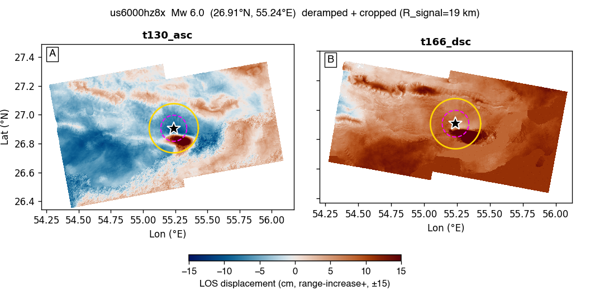
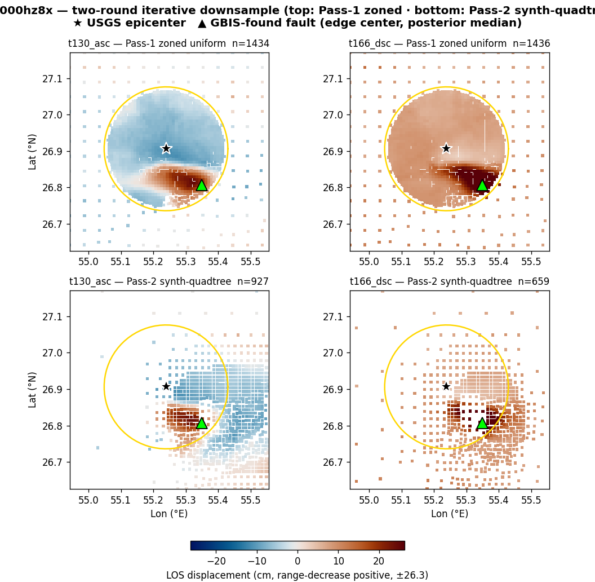

us6000hz8x — Mw 6.0 — GBIS report
Event: 52 km NE of Bandar-e Lengeh, Iran · (26.906°N, 55.239°E, depth 16.0 km)
USGS NP1: strike 285.6° / dip 39.5° / rake 98.2°
USGS NP2: strike 95.0° / dip 51.0° / rake 83.3°
Status: ESCALATED at stage 4 — all_runs_bad_diagnostics. Sections below show whatever the pipeline produced before it stopped; the rest are left blank. See §3 / escalation.md.
1. Raw observations (deramped + cropped)

2. Two-round iterative downsampling (Pass-1 zoned → Pass-2 synth-quadtree)

| track | Pass-1 zoned (pts) | Pass-2 synth-QT (pts) |
|---|
| t130_asc | 1434 | 927 |
| t166_dsc | 1436 | 659 |
Two-round iterative downsample (Luo+21). Pass-1: zoned uniform DS (near dense / far sparse) → short GBIS → initial model. Pass-2: GBIS-forward the initial model → smooth synthetic LOS field → variance quadtree on the synthetic field → mesh applied to real data. Sampling follows real deformation gradient, not noise — fewer but better-placed points than a noisy-data quadtree.
3. GBIS inversion result — posterior + diagnostics
| parameter | posterior median | p16 .. p84 | prior bound | USGS NP1 |
|---|
| L (km) | 0.01 | 10.51 .. 11.62 | 5.04 .. 17.62 | — |
| W (km) | 0.01 | 6.79 .. 7.50 | 3.25 .. 11.38 | — |
| Z_top (km) | 0.00 | 3.70 .. 4.21 | 0.10 .. 16.00 | — |
| dip (°) | -24.6 | 22.6 .. 26.8 | 4.5 .. 74.5 | 39.5 |
| strike (°) | 97.6 | 273.4 .. 282.3 | 225.6 .. 345.6 | 285.6 |
| X (km) | 0.01 | 10.41 .. 11.48 | -20.00 .. 20.00 | — |
| Y (km) | -0.01 | -11.15 .. -10.76 | -20.00 .. 20.00 | — |
| SS (m) | -0.305 | +0.193 .. +0.408 | -2.000 .. +2.000 | — |
| DS (m) | -0.985 | +0.898 .. +1.086 | -2.000 .. +2.000 | — |
| |slip| (m) | 1.031 | | — |
| rake (°) | 72.8 | | 98.2 |
| Mw | 6.22 ± 0.02 | | 6.0 |
USGS-convention values shown (dip>0, strike, rake). Red row = posterior median within 2% of a prior bound (railed).
诊断结论: PASS
acceptance 0.20 (target 0.20–0.45) · ESS 756 (≥500) · Geweke |z| 1.3 (≤2)
VR per track: t130_asc 0.39 · t166_dsc 0.83 (≥0.50)
全部通过
4. Beachball comparison
⏳ Not generated — needs the full-mode figure helper. the beachball (full-mode figure helper).
5. Triplet — data / model / residual
⏳ Not generated — needs the full-mode figure helper. the data/model/residual triplet (full-mode figure helper).
6. Joint-posterior corner plot
⏳ Not generated — needs the full-mode figure helper. the corner plot (full-mode figure helper).
7. Burn-in / chain trace
⏳ Not generated — needs the full-mode figure helper. the chain trace (full-mode figure helper).